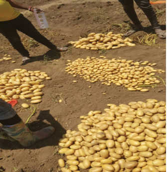

Agriculture for Secondary Schools
Immaturely harvested tubers usually have lower dry matter content. They also
tend to experience more skin damage, making them more susceptible to infections
by fungal and bacterial pathogens.
Cutting or detaching the vegetative part of potato plant above the ground
(dehaulming) two weeks before harvesting helps to harden the tuber skins.
Hardened skins reduce the risk of damage during harvesting and post-harvest
handling. Mature potatoes can be dehaulmed and left in the soil for 1–2 months.
The average yield of round potatoes in Tanzania is 8.43 t/ha for small-scale
farmers. Proper farming and uses of clean planting materials can increase yields
to 15 – 20 t/ha.
Postharvest management of round potato
After harvesting, some processes need to be done on the produce to improve its
shelf life. These include curing, sorting and grading, packaging, and marketing.
(a) Curing: This is the process of enhancing the shelf life and quality of
harvested potato tubers by spreading them under shade to allow healing
of minor injuries and hardening their skins. Depending on weather
conditions, curing can be done in the field or a specific place.
(b) Sorting and grading: After round potato tubers have been cured, they
should be sorted and graded based on their size, shape, and quality, ready
for market (refer to Figure 5.11).
Figure 5.11: Sorting and grading of round potato tubers
84
Student’s Book Form Two